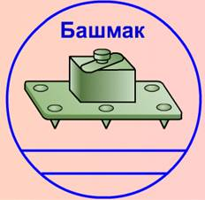
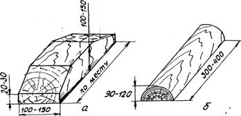

Dördünji usul boýunça HZM maşynyň agramyna garamazdan dört başmak bilen, ýeke direg tigirçekli maşynlar üçin dört kese goýma ýa-da jübütlenen direg tigirçekli maşynlar üçin sekiz uzaboýuna goýma bilen, şeýle hem kese süýşmeleriň öňüni almak üçin skobalar ýa-da gapdal dörtgyraň agaç bölekleri bilen berkidilýär.
Direg demir başmagy
Direg başmagy oňa kebşirlenen alty çiş we berkidijili korpus ýa-da berkidijiniň ýerine gaýkaly çybyk bilen demir direg plitasydyr.

Direg demir başmaklary HZM demir ýol açyk wagonlarynda berkitmek üçin ulanylýar.
Agaç goýmalar
Agaç goýmalar HZM berkidilende direg tigirçekleriniň zynjyrlaryň aşaky şahalary boýunça tigirlenmeginiň öňüni almak üçin ulanylýar.

Maşyny ýüklemäge taýýarlamak
HZM açyk wagonda berkitmek üçin ýüklemezden öň şular zerurdyr:
— zynjyrlary şosse boýunça hereket edilýän ýaly dartmaly;
— hapadan, gyşyna bolsa gardan we buzdan gowy arassalamaly;
— tormoz ulgamynyň we diňiň saklaýjylarynyň sazlygyny barlamaly;
— ulanyş boýunça gollanma laýyklykda demir ýol boýunça daşamak üçin ýagdaýa getirmeli.
HZM açyk wagonda ýerleşdirmegiň we berkitmegiň tertibi
1. Açyk wagonda onuň uzaboýuna we kese oklaryna görä simmetrik goýlan maşynda ikinji we soňundan öňki direg tigirçekleriniň oklarynyň aşagynda ýerleşýän traklar bellenilýär (hek, ýüp we ş.m. bilen).
Başmaklary gurnamagyň tertibi şporlary gurnamagyň tertibi ýalydyr.
2. Maşyn öňe süýşürilýär, bellenen traklaryň üstünde yzdaky jübüt başmaklar gurnalýar.
3. Maşyn yza süýşürilýär, bellenen traklaryň üstünde öňdäki jübüt başmaklar gurnalýar. Ähli maşynlarda başmaklar ikinji we soňundan öňki direg tigirçekleriniň aşagynda gurnalýar.
4. Maşyn başlangyç ýagdaýyna gaýtarylýar, şunda başmaklar ikinji we soňundan öňki direg tigirçekleriniň aşagynda bolýar

5. Uzaboýuna ýa-da kese agaç goýmalary düşemek.
5.1. Kese goýmalar maşynyň her tarapyndan iki-ikiden direg tigirçekleriniň we zynjyr lentalarynyň traklarynyň gerişleriniň arasynda şeýle düşelýär welin, goýmalaryň bir jübüti maşynyň zynjyrlar boýunça öňe tigirlenmegine, ikinjisi bolsa — yza tigirlenmegine päsgel berer ýaly
5.2. Uzaboýuna goýmalar her bir zynjyra jübüt-jübüt düşelýär, birinji we ikinji, soňky we soňundan öňki direg tigirçeklerini gysdyrýar (zynjyra bir jübüt). Her bir jübütde goýmalar ýokarsyndan biri-birine gurluşyk skobasy bilen berkidilýär
Ýüklenen maşynlary daşamaga taýýarlamak
Açyk wagonda ýüklenen we berkidilen HZM daşamak üçin şular zerurdyr:
— yza ýöreýiş geçirişine goýmaly we tormozlamaly;
— geçiriş gutusynyň swipçegini we tormoz pedalyny şondan soň möhürlemeli;
— ýangyç beriş swipçegini nol ýagdaýyna goýmaly.